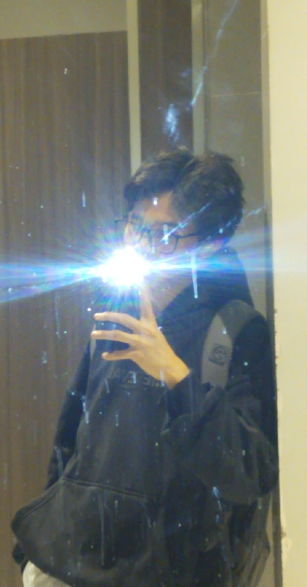

Zamboanga City, Philippines
Full-Stack Developer / Graphic Designer
I am an Bachelor of Science in Information Technology and the Lead Developer of Digital Arc. My work focuses on bridging the gap between high-end creative design and robust backend systems.
Development
Creative
ZPPSU / BSIT
Lead Developer
Class of 2026
2026 - Present
Directing full-stack development.
Project / ZPPSU
Engineered using VB.NET and SQL.
Contractual